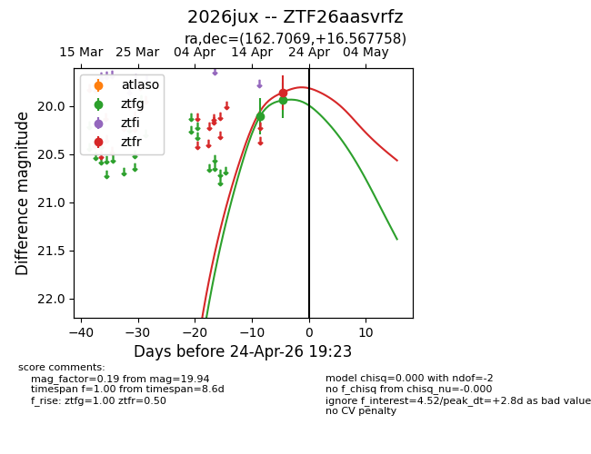
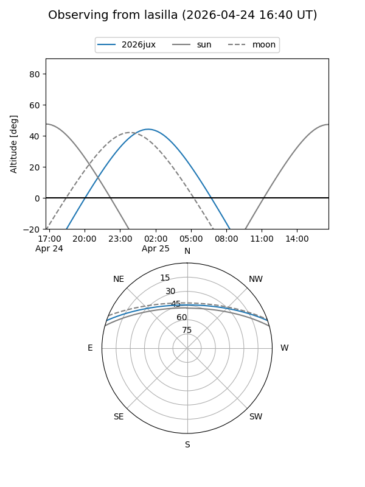
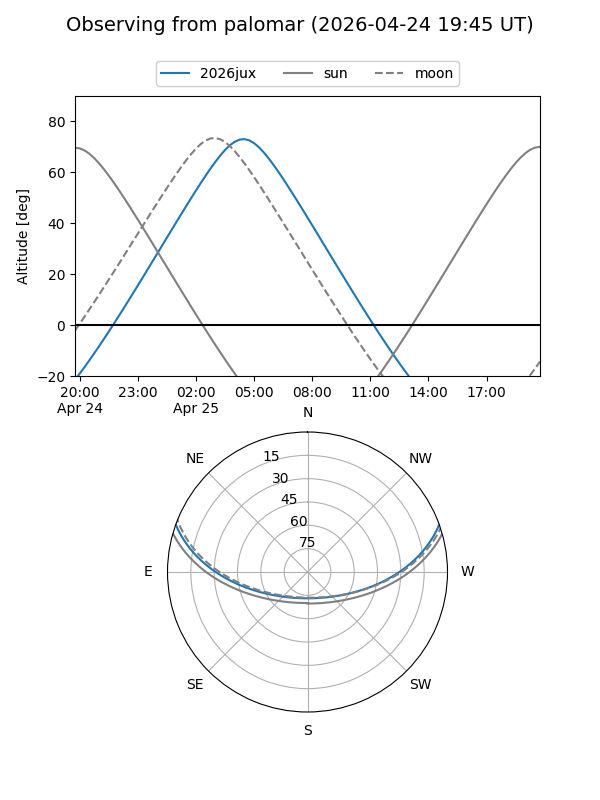
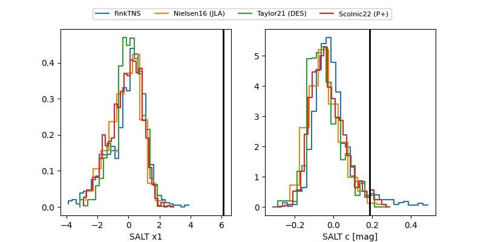

2026jux
Target 2026jux at 2026-04-24 19:24
Aliases and brokers:
FINK: link
Lasair: link
ALeRCE: link
TNS: link
YSE: link
alt names
ZTF26aasvrfz (ztf,fink_ztf)
2026jux (tns,yse)
Coordinates:
equatorial (ra, dec) = 162.7069,+16.56776
equatorial (HMS+DMS) = 10:50:49.65,+16:34:03.93
galactic (l, b) = (227.3900,+60.18529)
Flags:
Photometry:
last ztfg=19.94, ztfr=19.86
2 ztfg, 1 ztfr detections
Lightcurve

Visibility


Additional plots
